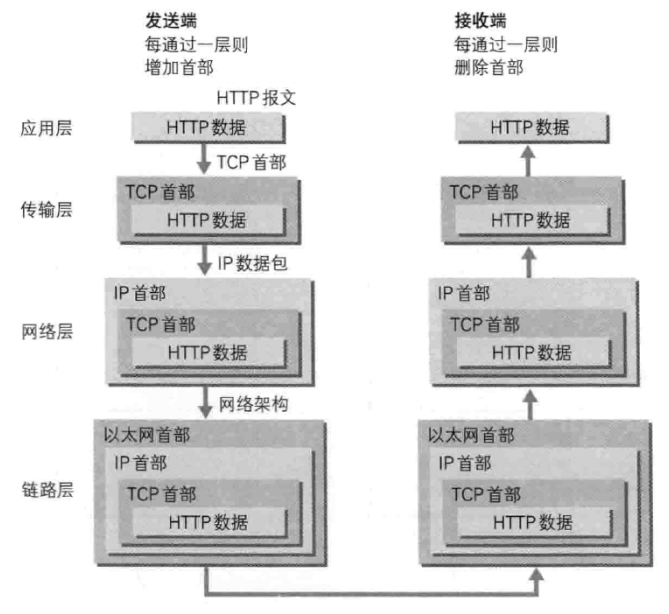
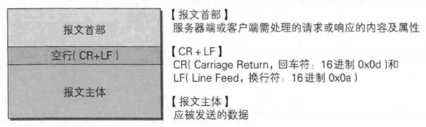
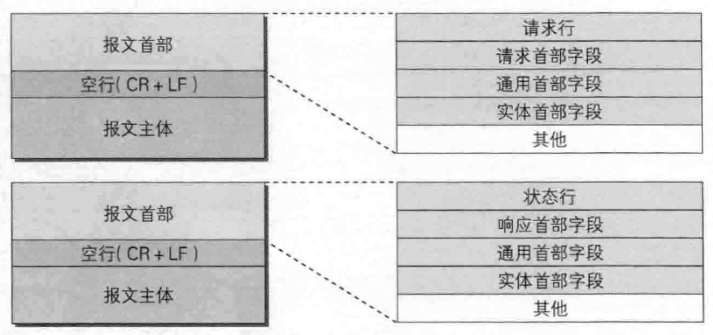
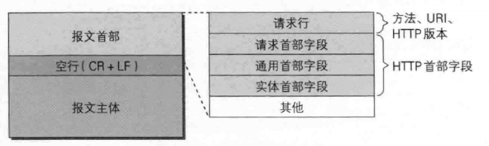
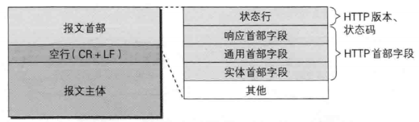

HTTP 1.1
Web 使用一种名为 HTTP(HyperText Transfer Protocol, 超文本传输协议/超文本转移协议)的协议作为规范，完成从客户端到服务端等一系列运作流程。
TCP/IP 协议族 里重要的一点就是分层。TCP/IP 协议族按层次分别分为以下4层：应用层、传输层、网络层和数据链路层。
TCP/IP 协议族各层的作用如下：
应用层
应用层决定了向用户提供应用服务时通信的活动。
TCP/IP 协议族内预存了各类通用的应用服务，比如，FTP(File Transfer Protocol, 文件传输协议) 和 DNS(Domain Name System, 域名系统) 服务就是其中两类。
传输层
传输层对上层应用层提供处于网络连接中的两台计算机之间的数据传输。
在传输层有两个性质不同的协议：TCP(Transmission Control Protocol, 传输控制协议) 和 UDP(User ata Protocol) 用户数据报协议。
网络层 (又名网络互连层)
网络层用来处理在网络上流动的数据包。数据包是网络传输的最小数据单位。该层规定了通过怎样的路径 (所谓的传输路线) 到达对方计算机，并把数据包传送给对方。
与对方计算机之间通过多台计算机或万灵果设备进行传输时，网络层所起的作用就是在众多的选项内选择一条传输路线。
链路层 (又名数据链路层，网络接口层)
用来处理链接网络的硬件部分。包括控制操作系统、硬件的设备驱动，NIC(Network Interface Card, 网络适配器，即网卡)，及光纤等物理可见部分 (还包括连接器等一切传输媒介)。硬件上的范畴均在链路层的作用范围之内。

发送端在层与层之间传输数据时，每经过一层时必定会被打上一个该层所属的首部信息。反之，接收端在层与层传输数据时，每经过一层时会把对应的首部消去。
这种把信息包装起来的做法称为封装 (encapsulate)。
详细学习见《TCP/IP 详解》
HTTP/1.0 和 HTTP/1.1 支持的方法
| 方法 | 说明 | 支持的 HTTP 协议版本 |
|---|---|---|
| GET | 获取资源 | 1.0、1.1 |
| POST | 传输实体主体 | 1.0、1.1 |
| PUT | 传输文件 | 1.0、1.1 |
| HEAD | 获得报文头部 | 1.0、1.1 |
| DELETE | 删除文件 | 1.0、1.1 |
| OPTIONS | 询问支持的方法 | 1.1 |
| TRACE | 追踪路径 | 1.1 |
| CONNECT | 要求用隧道协议连接代理 | 1.1 |
| LINK | 建立和资源之间的联系 | 1.0 |
| UNLINK | 断开连接关系 | 1.0 |
持久连接
HTTP 协议的初始版本中，每进行一次 HTTP 通信就要断开一次 TCP 连接。
每次的请求都会造成无谓的 TCP 连接建立和断开，增加通信量的开销。
为了解决持久连接的问题，HTTP/1.1 和 一部分的 HTTP/1.0 相处了持久连接 (HTTP Persistent Connections, 也称为 HTTP keep-alive 或 HTTP connection reuse) 的方法。
持久连接的特点是，只要任意一端没有明确提出断开连接，则保持 TCP 连接状态。
HTTP 报文
用于HTTP协议交互的信息被称为 HTTP 报文。请求端 (客户端) 的 HTTP 报文叫做请求报文，响应端 (服务器端) 的叫做响应报文。HTTP 报文本身是由多行 (用 CR+LF 作换行符) 数据构成的字符串文本。
HTTP 报文大致可分为报文首部和报文主体两块。两个由最初出现的空行来划分。通常并不一定有报文主体。


报文主体和实体主体
- 报文 (message)
是 HTTP 通信中的基本单位，由 8 位组字节流 (octet sequence, 其中 octet 为 8 个bit) 组成，通过 HTTP 通信传输。 - 实体 (entity)
作为请求或响应的有效载荷数据 (补充项) 被传输，其内容由实体首部和实体主体组成。
HTTP 报文的主体用于传输请求或响应的实体主体。
压缩传输的内容编码
常用的内容编码有以下几种：
- gzip (GNU zip)
- compress (UNIX 系统的标准压缩)
- deflate (zlib)
- identity (不进行编码)
HTTP 状态码
| 状态码 | 类别 | 原因短语 |
|---|---|---|
| 1XX | Informational (信息性状态码) | 接受的请求正在处理 |
| 2XX | Success (成功状态码) | 请求正常处理完毕 |
| 3XX | Redirection (重定向状态码) | 需要进行附加操作以完成请求 |
| 4XX | Client Error (客户端错误状态码) | 服务器无法处理请求 |
| 5XX | Server Error (服务器错误状态码) | 服务器处理请求出错 |
2XX 成功
- 200 OK
- 204 No Content
- 206 Partial Content
3XX 重定向
- 301 Moved Permanently
- 302 Found
- 303 See Other
- 304 Not Modified
虽然 304 被分在 3XX 类别中，但是和重定向没有关系。
4XX 客户端错误
- 400 Bad Request
- 401 Unauthorized
- 403 Forbidden
- 404 Not Found
5XX 服务器错误
- 500 Internal Server Error
- 503 Service Unavailable
状态码和状况的不一致
不少返回的状态码响应都是错误的，但是用户可能察觉不到这点。比如 Web 应用程序内部发生错误，状态码依然返回 200 OK，这种情况也经常遇到。
HTTP 首部
在请求中，HTTP 报文由方法、URL、HTTP 版本、HTTP 首部字段等部分构成。

在响应中，HTTP 报文由 HTTP 版本、状态码 (数字和原因短语)、HTTP 首部字段 3 部分构成。

HTTP 首部字段
HTTP 首部字段根据实际用途被分为以下4种类型：
- 通用首部字段 (General Header Fields)
请求报文和响应报文两方都会使用的首部 - 请求首部字段 (Request Header Fields)
从客户端向服务端发送请求报文时使用的首部。补充了请求的附加内容、客户端信息、响应内容相关优先级等信息。 - 响应首部字段 (Response Header Fields)
从服务端向客户端返回响应报文时使用的首部。补充了响应的附加内容，也会要求客户端附加额外的内容信息。 - 实体首部字段 (Entity Header Fields)
针对请求报文和响应报文的额实体部分使用的首部。补充了资源内容更新时间等与实体有关的信息。
通用首部字段
- Cache-Control
通过制定首部字段 Cache-Control 的指令，就能操作缓存的工作机制。
Cache-Control 指令一览：
缓存请求指令
| 指令 | 参数 | 说明 |
|---|---|---|
| no-cache | 无 | 强制向源服务器再次验证 |
| no-store | 无 | 不缓存请求或响应的任何内容 |
| max-age = [秒] | 必须 | 响应最大的 Age 值 |
| max-stale( = [秒]) | 可省略 | 接收已过期的响应 |
| min-fresh = [秒] | 必需 | 期望在指定时间内的响应仍有效 |
| no-transform | 无 | 代理不可更改媒体类型 |
| only-if-cached | 无 | 从缓存获取资源 |
| cache-extension | - | 新指令标记 (token) |
缓存响应指令
| 指令 | 参数 | 说明 |
|---|---|---|
| public | 无 | 可向任意方提供响应的缓存 |
| private | 可省略 | 仅向特定用户返回响应 |
| no-cache | 可省略 | 缓存前必须先确认其有效性 |
| no-store | 无 | 不缓存请求或响应的任何内容 |
| no-transform | 无 | 代理不可更改媒体类型 |
| must-revalidate | 无 | 可缓存但必须再向源服务器进行确认 |
| proxy-revalidate | 无 | 要求中间缓存服务器缓存的响应有效性再进行确认 |
| max-age = [秒] | 必须 | 响应最大的 Age 值 |
| s-maxage = [秒] | 必须 | 公共缓存服务器响应的最大 Age 值 |
| cache-extension | - | 新指令标记 (token) |
- Connection
Connection 首部字段具备如下两个作用：
- 控制不再转发给代理的首部字段
- 管理持久连接
Connection: UpgradeConnection: Keep-AliveConnection: close
Date
首部字段 Date 表明创建 HTTP 报文的日期和时间
HTTP/1.1 协议使用在 RFC1123 中规定的日期时间的格式Date: Tue, 03 Jul 2012 04:40:59 GMTPragma
Pragma 是 HTTP/1.1 之前版本的历史遗留字段，仅作为与 HTTP/1.0 的向后兼容而定义。
规范定义的形式唯一：Pragma: no-cacheTrailer
首部字段 Trailer 会事先说明在报文主体后记录了哪些首部字段，该字段可应用在 HTTP/1.1 版本分块传输编码时。1234...Trailer: Expires...(报文主体)...Expires: Tue, 28 Sep 2004 23:59:59 GMTTransfer-Encoding
首部字段 Transfer-Encoding 规定了传输报文主体时采用的编码方式。Upgrade
首部字段 Upgrade 用于检测 HTTP 协议及其他协议是否可使用更高的版本进行通信，其参数可以用来指定一个完全不同的通信协议
使用首部字段 Upgrade 时，需要额外指定Connection: Upgrade
对于富有首部字段 Upgrade 的请求，服务器可用 101 Switching Protocols 状态码作为响应返回。Via
使用首部字段 Via 是为了追踪客户端与服务器之间的请求和响应报文的传输路径。Warning
HTTP/1.1 的 Warning 首部是从 HTTP/1.0 的响应首部 (Retry-After) 演变过来的，该首部通常会告知用户一些与缓存相关的问题的警告。
Warning 首部的格式如下：Warning: [警告码] [警告的主机:端口号] "[警告内容]" ([日期时间])
HTTP/1.1 警告码
| 警告码 | 警告内容 | 说明 |
|---|---|---|
| 110 | Response is stale (响应已过期) | 代理返回已过期的资源 |
| 111 | Revalidation failed (再次验证失败) | 代理再验证资源有效性时失败 (服务器无法到达等原因) |
| 112 | Disconnection operation (断开连接操作) | 代理与互联网连接被故意切断 |
| 113 | Heuristic expiration (试探性过期) | 响应的使用期超过24小时 (有效缓存设定时间大于24小时的情况下) |
| 199 | Miscellaneous warning (杂项警告) | 任意的警告内容 |
| 214 | Transformation applied (使用了转换) | 代理对内容编码或媒体类型等执行了某些处理时 |
| 299 | Miscellaneous persistent warning (持久杂项警告) | 任意的警告内容 |
请求首部字段
Accept
Accept 首部字段可通知服务器，用户代理能够处理的媒体类型及媒体类型的相对优先级。可使用type/subtype这种形式，一次指定多种媒体类型。
若想给显示的媒体类型增加优先级，则使用q=来额外表示权重值，用分号进行分割。权重值 q 的范围是 0~1 可精确到小数点后3位，且1为最大值。不指定权重 q 值时，默认权重为 q=1.0。Accept: text/html, application/xhtml+xml, application/xml;q=0.9, */*;q=0.8Accept-Charset
Accept-Charset 首部字段可用来通知服务器用户代理支持的字符集，及字符集的相对优先顺序。另外可一次性指定多种字符集，与首部字段 Accept 相同的是可用权重 q 值来表示相对优先级。Accept-Charset: utf-8Accept-Encoding
Accept-Encoding 首部字段用来告知服务器用户代理支持的内容编码及内容编码的优先级顺序。可一次性指定多种内容编码。Accept-Encoding: gzip, deflateAccept-Language
首部字段 Accept-Language 用来告知服务器用户代理能够处理的自然语言集，以及自然语言集的相对优先级，可一次指定多种自然语言集。Accept-Language: zh-cn,zh;q=0.7,en-us,en;q=0.3Authorization
首部字段 Authorization 是用来告知服务器，用户代理的认证信息 (证书值)。Expect
客户端使用首部字段 Expect 来告知服务器，期望出现的某种特定行为。
因服务器无法理解客户端的期望做出回应而发生错误时，会返回状态码 417 Expectation Failed。Expect: 100-continueFrom
首部字段 From 用来告知服务器使用用户代理的用户的电子邮件地址。Host
首部字段 Host 会告知服务器，请求的资源所处的互联网主机名和端口号。
Host 首部字段在 HTTP/1.1 规范内是唯一一个必须包含在请求内的首部字段。Host: github.comIf-Match
形如 If-xxx 这种样式的请求首部字段，都可称为条件请求。服务器接收到附带条件的请求后，只有判断指定条件为真时，才会执行请求。
首部字段 If-Match，属附带条件之一，它会告知服务器匹配资源所用的实体标记 (ETag) 值。
If-Modified-Since
首部字段 If-Modified-Since，属附带条件之一，它会告知服务器若 If-Modified-Since 字段值早于资源的更新时间，则希望能处理该请求。If-None-Match
首部字段 If-None-Match，属附带条件之一，它和 If-Match 相反。If-Range
首部字段 If-Range，属附带条件之一，它告知服务器若指定的 If-Range 字段值 (ETag 值或者时间) 和请求资源的 ETag 值或时间相一致时，则作为范围请求处理，反之则返回全体资源。If-Unmodified-Since
和 If-Modified-Since 相反Max-Forwards
通过 TRACE 方法或 OPTIONS 方法，发送包含首部字段 Max-Forwards 的请求时，该字段以10进制整数形式指定可经过的服务器最大数目。Proxy-Authorization
接收到从代理服务器发送来的认证质询时，客户端会发送包含首部字段Proxy-Authorization的请求，以便告知服务器认证所需的信息。Range
Range: bytes=5001-10000
对于只需获取部分资源的范围请求，包含首部字段 Range 即可告知服务器资源的指定范围。Referer
Referer: http://github.com/
首部字段 Referer 会告知服务器请求的原始资源的URL
会被用来爬虫和反爬虫…
Referer的正确英语拼法是referrer。由于早期HTTP规范的拼写错误，为了保持向下兼容就将错就错了。其它网络技术的规范企图修正此问题，使用正确拼法，所以目前拼法不统一。
- TE
首部字段 TE 会告知服务器客户端能够处理响应的传输编码方式及相对优先级。
它和首部字段 Accept-Encoding 的功能很像，但是用于传输编码TE: gzip
除了指定传输编码之外，还可以指定伴随 trailer 字段的分块传输编码方式。只需把 trailers 赋值给该字段值。TE: trailers
- User-Agent
首部字段 User-Agent 会将创建请求的浏览器和用户代理名称等信息传达给服务器。
爬虫要模拟浏览器就要添加该字段。
响应首部字段
响应首部字段是由服务器向客户端返回相应报文中所使用的字段，用于补充相应的附加信息、服务器信息，以及客户端的附加要求等信息。
Accept-Ranges
用来告知客户端，服务器是否能处理范围请求，以指定获取服务器端某个部分的资源。
可指定的字段值有两种，可处理范围请求时指定其为 bytes，反之则指定其为 noneAge
首部字段 Age 能告知客户端，源服务器在多久前创建了响应。字段值的单位为秒。ETag
能够告知客户端实体标识Location
可以讲响应接收方引导至某个与请求URL位置不同的资源。Proxy-Authenticate
首部字段 Proxy-Authenticate 会把由代理服务器所要求的认证信息发送给客户端。Retry-After
告知客户端应该在多久之后再次发送请求。Server
告知客户端当前服务器上安装的 HTTP 服务器应用程序的信息。不单单会标出服务器上的软件应用名称，还可能包括版本号和安装时启动的可选项。Vary
源服务器会向代理服务器传达关于本地缓存使用方法的命令。WWW-Authenticate
用于 HTTP 访问认证。它会告知客户端用于访问请求 URL 所制定资源的认证方案 (Basic 或是 Digest) 和带参数提示的质询 (challenge)。
状态码 401 Unauthorized 响应中，肯定带有首部字段 WWW-Authenticate。
实体首部字段
实体首部字段是包含在请求报文和响应报文中的实体部分所使用的首部，用于不中内容的更新时间等与实体相关的信息。
Allow
用于通知客户端能够支持 Request-URL 指定资源的所有 HTTP 方法。
当服务器接收到不支持的 HTTP 方法是，会以状态码 405 Method Not Allowed 作为响应返回，与此同时，还会把所有能支持的 HTTP 方法写入首部字段 Allow 后返回。Content-Encoding
告知客户端服务器对实体的主体部分选用的内容编码方式。Content-Language
告知客户端，实体主体使用的自然语言。Content-Length
告知客户端，实体主体的大小，单位字节。Content-Location
给出与报文主体部分相对应的URLContent-MD5
对报文主体执行 MD5 算法获得的 128 位二进制数，再通过 Base64 编码后将结果写入 Content-MD5 字段值。Content-Range
告知客户端作为响应返回的实体的哪个部分符合范围请求。字段值以字节为单位，表示当前发送部分及整个实体大小。Content-Type
说明了实体主体内对象的媒体类型。和首部字段 Accept 一样，字段值用 type/subtype 形式赋值。Expires
将资源失效的日期告知客户端。Last-Modified
知名资源最终修改的时间
为 Cookie 服务的首部字段
Cookie 的工作机制是用户识别及状态管理。Web网站为了管理用户的状态会通过Web浏览器，把一些数据临时写入用户的计算机内。接着当用户访问该Web网站时，可通过通信方式取回之前发放的 Cookie。
- Set-Cookie
Set-Cookie 字段的属性
| 属性 | 说明 |
|---|---|
| NAME=VALUE | 赋予 Cookie 的名称和其值 (必需项) |
| expires=DATE | Cookie 的有效期 (若不明确指定则默认为浏览器关闭前为止) |
| path=PATH | 将服务器上的文件目录作为Cookie的适用对象 (若不指定则默认为文档所在的文件目录) |
| domain=域名 | 作为Cookie适用对象的域名 (若不指定则默认为创建Cookie的服务器的域名) |
| Secure | 仅在HTTPS安全通信时才会发送Cookie |
| HttpOnly | 加以限制，使Cookie不能被JavaScript脚本访问 |
- Cookie
Cookie: status=enable
Cookie 会告知服务器，当客户端想获得HTTP状态管理支持时，就会在请求中包含从服务器接收到的Cookie。接收到多个Cookie时，同样可以以多个Cookie形式发送。
其他首部字段
HTTP 首部字段是可以自行扩展的。所以在Web服务器和浏览器应用上，会出现各种非标准的首部字段。
X-Frame-Options
首部字段 X-Frame-Options 属于HTTP响应首部，用于控制网站内容在其他Web网站的Frame标签内的显示问题。其主要目的是为了防止点击劫持攻击。DENY: 拒绝SAMEORIGIN: 仅同源域名下的页面 (Top-level-browsing-context) 匹配时许可。X-XSS-Protection
首部字段 X-XSS-Protection 属于HTTP响应首部，它是针对跨站脚本攻击的一种对策，用于控制浏览器XSS防护机制的开关。0: 将XSS过滤设置成无效状态1: 将XSS过滤设置成有效状态DNT
首部字段 DNT 属于 HTTP 请求首部，其中 DNT 是 Do Not Track 的简称，意为拒绝个人信息被手机，是表示拒绝被精准广告追踪的一种方法。0: 同意被追踪1: 拒绝被追踪P3P
首部字段 P3P 属于 HTTP 相应首部，通过利用 P3P (The Platform for Privacy Preferences, 在线隐私偏好平台) 技术，可以让Web网站上的个人隐私变成一种仅供程序可理解的形式，以达到保护用户隐私的目的。
HTTP/2.0
HTTP2 的基本概念
HTTP2 是基于SPDY的..
HTTP2 有着分厂明确的职责限定：
- 它必须维持 HTTP 的范式。毕竟它只是一个让客户端发送请求到服务器的基于TCP的协议。
- 不能盖面 http:// 和 https:// 这样的 URL，也不能对其添加新的结构。使用这类URL的网站太多了，没发指望他们全部改变。
- HTTP1的服务器和客户端依然会存在很久，所以我们必须提供HTTP1到HTTP2服务器的代理。
- 我们也要让这种代理能够将HTTP2的功能一对一的映射到HTTP1.1的客户端
- 删除或者减少协议里面那些可选的部分。虽然这并不算的上是一个需求，但是SPDY和Google的团队都非常喜欢这样。通过让协议里的所有内容都成为强制性需求，可以防止人们在实现的时候偷懒，从而规避一些将来可能发生的问题。
- 不再使用小版本号。服务器和客户端都必须确定自己是否完整兼容HTTP2或者彻底不兼容。如果将来协议需要被扩充或者变更，那么新的协议将会是HTTP3，而不是HTTP2.X
HTTP2和现有的URI结构
HTTP 1.1本身就制定过“升级”的方案：提供一个首部字段， 表示允许服务器在收到旧协议请求的同时， 可以向客户端发送新协议的响应。 但这一方案往往需要多花费一次往返通信来作为升级的代价。
而这一代价是SPDY团队不想接受的。 因为他们只实现了基于TLS的SPDY， 所以他们开发了一个TLS的扩展去简化协议的协商。 这个扩展被称作NPN（ Next Protocol Negotiation） ， 借助于此， 服务器会通知客户端所有它支持的协议， 让客户端从中选择一个合适的来进行通讯。
HTTP2将TLS标记成了可选。 然而， 全球两大浏览器领导者 —— Firefox和Chrome都明确地表示， 他们只会实现基于TLS的HTTP2
规范中指定了TLS最低版本为1.2， 并且会有加密组的限制。
对于纯文本的HTTP1.1来说， 协商http2的方法就是通过给服务器发送一个带升级头部的报文。 如果服务器支持http2， 它将以“101 Switching”作为回复的状态码， 并从此开始在该连接上使用http2。 也许你很容易就发现这样一个升级的流程会需要消耗掉一整个的往返时延， 但好处是http2连接相比HTTP1可以被更大限度地重用和保持。
虽然有些浏览器厂商的发言人宣称他们不会实现这样的http2会话方式， 但IE团队已公开表示他们会实现， 与此同时， curl也已经支持了这种方式
基于TLS之上的HTTP2协商
Next Protocol Negotiation (NPN)是一个用来在TLS服务器上协商SPDY的协议。 IETF将这个非正式标准进行规范化， 从而演变成了ALPN（ Application Layer Protocol Negotiation）。ALPN会随着http2的应用被推广， 而SPDY的客户端与服务器则会继续使用NPN。
ALPN和NPN的主要区别在于：谁来决定该次会话所使用的协议。 在ALPN的描述中， 是让客户端先发送一个协议优先级列表给服务器， 由服务器最终选择一个合适的。 而NPN则正好相反， 客户端有着最终的决定权。
HTTP2 协议
HTTP2 是一个二进制协议。
http2会发送有着不同类型的二进制帧， 但他们都有如下的公共字段：Type, Length, Flags, StreamIdentifier和frame payload
规范中一共定义了10种不同的帧，其中最基础的两种分别对应于HTTP1.1的DATA和HEADERS。
http2连接上传输的每个帧都关联到一个“流”。 流是一个逻辑上的联合， 一个独立的， 双向的帧序列可以通过一个http2的连接在服务端与客户端之间不断的交换数据。
每个单独的http2连接都可以包含多个并发的流， 这些流中交错的包含着来自两端的帧。 流既可以被客户端/服务器端单方面的建立和使用， 也可以被双方共享， 或者被任意一边关闭。 在流里面， 每一帧发送的顺序非常关键。 接收方会按照收到帧的顺序来进行处理。
每个流都包含一个优先级（ 也就是“权重”） ， 它被用来告诉对端哪个流更重要。 当资源有限的时候， 服务器会根据优先级来选择应该先发送哪些流。
借助于PRIORITY帧， 客户端同样可以告知服务器当前的流依赖于其他哪个流。 该功能让客户端能建立一个优先级“树”， 所有“子流”会依赖于“父流”的传输完成情况。
HTTP2 也是一种无状态的协议。
HPACK， HTTP/2头部压缩， 顾名思义它是一个专为http2头部设计的压缩格式。 确切的讲，它甚至被制定写入在另外一个单独的草案里。 新的格式同时引入了一些其他对策让破解压缩变得困难， 例如采用帧的可选填充和用一个bit作为标记， 来让中间人不压缩指定的头部。
在http2里面， 我们可以通过发送RST_STREAM帧来实现重置， 从而避免浪费带宽和中断已有的连接。
服务器推送，这个功能通常被称作“缓存推送”。 主要的思想是：当一个客户端请求资源X， 而服务器知道它很可能也需要资源Z的情况下， 服务器可以在客户端发送请求前， 主动将资源Z推送给客户端。 这个功能帮助客户端将Z放进缓存以备将来之需。
如果不需要的话， 客户端可以通过发送一个RST_STREAM帧来中止。
http2上面每个流都拥有自己的公示的流量窗口， 它可以限制另一端发送数据。
扩展
协议强制规定了接收方必须读取并忽略掉所有未知帧类型的帧。 双方可以在逐跳原则（ hopby-hop basis） 基础上协商使用新的帧， 这些帧的状态无法被改变， 而且也不受流控制。
备选服务（ Alternative Services）
服务器将会通过发送Alt-Svc头（ 或者http2的ALTSVC帧） 来告知客户端另一个备选服务。 即另外一条指向不同的服务源、 主机或端口， 但却能获取同样内容的路由。
藉此， 客户端可以尝试异步的连接并使用该服务， 如果它切实可用的话。
阻塞（ Blocked）
这个类型的帧意味着：当服务端存在需要发送的内容， 但流控制却禁止发送任何数据时， 那么此类型的帧将会被发送且仅发送一次。 这种帧设计的目的在于， 如果你接收到了此帧， 那么连接中必然有错误发生或者是得到了低于期望的传输速度。
有可能移除..
结束
HTTP2的学习不详细，后续资料齐全再补充…